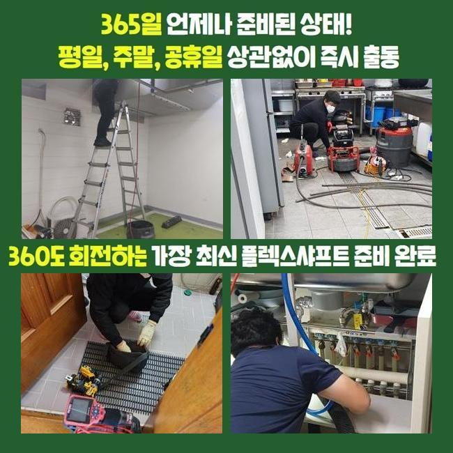
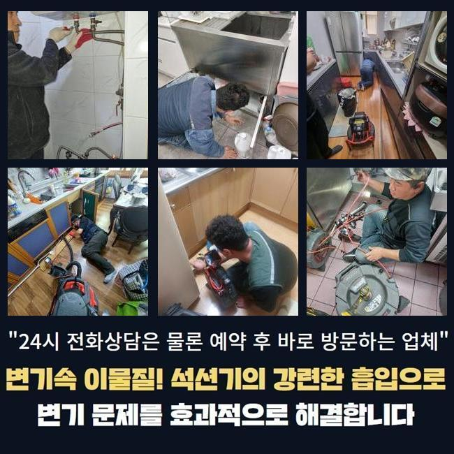
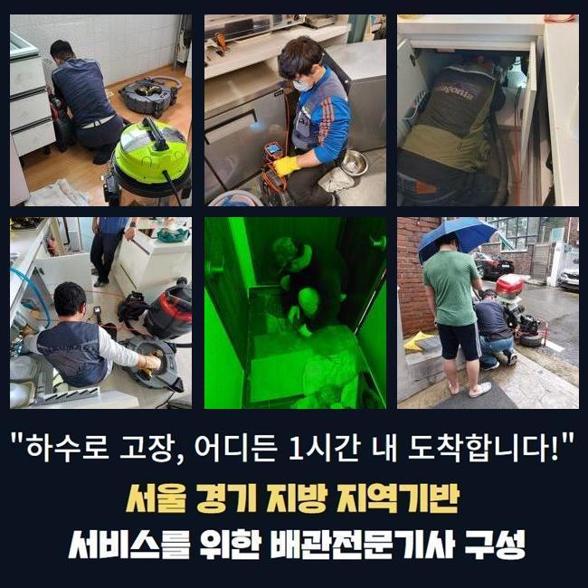
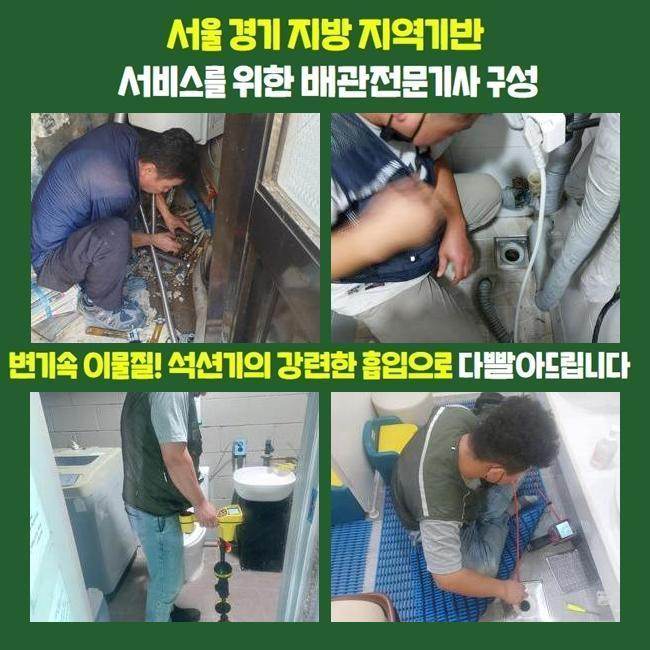
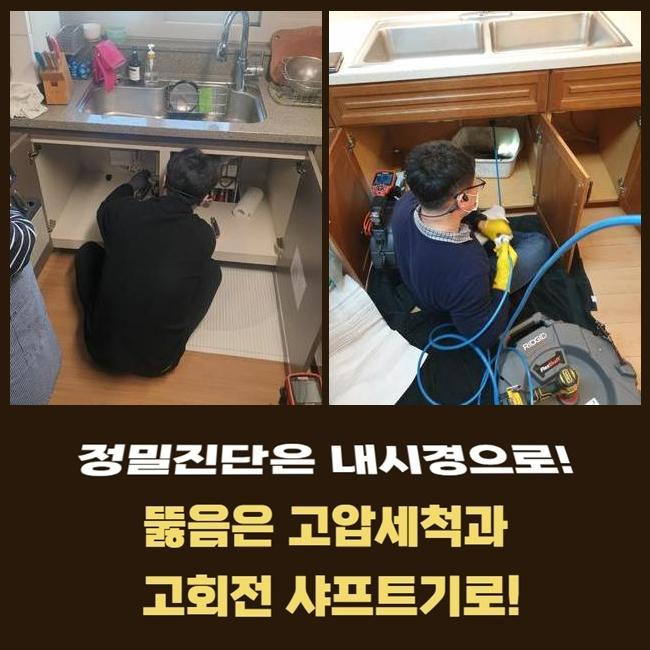
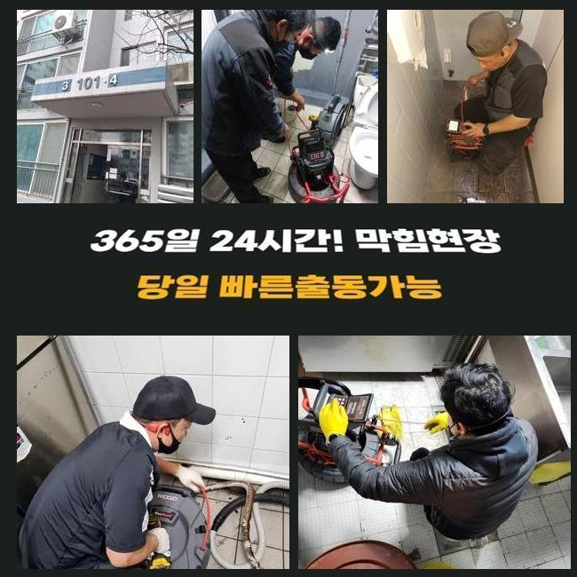
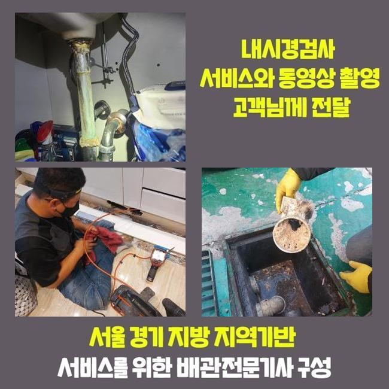

🏠 안양 석수동하수구막힘 횡주관청소 배관공사
안양 하수구막힘 전문 시공 후기

📋 작업 개요
- 위치: 안양
- 서비스 유형: 하수구막힘, 배관막힘, 집수정막힘, 역류해결, 배관청소, 설비공사
- 작업 일시: 2025. 2. 8. 19:00
- 업체명: 하수구수사대 (010-5615-2118)
🔍 문제 상황
안양 석수동하수구막힘 횡주관청소 배관공사
공동 주택 내부 하수설비를 점검하지 않고 사용하면 침전물이 쌓여 하수라인의 역류문제가 발생할 가능성이 높아집니다
그렇기때문에 연식이 많이 되었다면 정기적으로 배수구의 컨디션을 확인해봐야 해요
어제 저녁에 사례자님께서 배수관이 막힌건지 물이 내려가질 않는다고 전화주셨어요
출동해보니 약간 외딴 지역의 다세대주택으로 근처에는 캠핑장이 들어와있는 상황이였어요
주택을 지으신게 그리 오래된게 아닌데 외부로 역류문제가 반복적으로 일어난다고 설명 해주셨습니다
확인해본 결과로는 창고에 설치 되어있는 집수정쪽에서 바깥에 있는 정화조로 유입되는 상황이였습니다
정화조의 위치가 멀었기때문에 이곳에 설치 하셨다고 말씀하셨어요
고객님께 막혀있는 지점들을 찾는다해도 중간부분에 점검구가 없는 경우라면 생각보다 작업이 길어질 수 있다고 설명을 드렸고 동의를 해주셨습니다
집수정쪽에서 내시경장치를 집어넣었으나 이물질들이 꽉 막혀있어서 진행방향으로 카메라가 들어가지 못했어요

🔎 원인 분석
💡 전문가 진단: 정밀 진단 장비를 사용하여 슬러지의 고착 여부를 판명하고 타격/세척 작업을 실시했습니다.
불순물이 꽉 막혀있는 상황을 사례자님께도 보여드렸어요
샤프트장비로 작업을 시작했어요
기기에 머리카락들과 물티슈들이 계속적으로 걸려서 나왔습니다
다세대주택의 역류문제의 이유들은 물티슈와 머리카락등이 흔하게 나와요
사례자님께 물티슈와 머리카락은 거름망을 통해 버리시라고 안내를 해드렸어요
물티슈같은 것은 화학적인 성분으로 종이재질이 아니라 플라스틱 성질이므로 물과 만나 녹는게 아니예요
요즘엔 녹는 것도 있지만 한번에 많이 사용하시면 배수라인이 막히게 되면서 역류상황이 벌어지게 됩니다
하수관 내부에 있는 노폐물과 합쳐져 큰덩어리로 변하면서 막혀버리겠죠
사용자께서 물티슈같은 오염물질을 분리배출 하셔야 해요!
배수라인은 오수를 다루는 시설이라는걸 기억하여 오염물질은 따로 처리하셔야 해요

🔧 작업 과정
다음엔 창고로 이동하여 내시경 작업을 이어갑니다
하수라인이 길게 설치되어 있어서 내시경기기계가 끝쪽까지 진입하는게 불가능해서 쏜드를 이용했어요
막힌 부분쪽에 계속적으로 불순물 제거과정을 이어나갔어요
앞전 상황과 똑같이 물티슈와 엉킨 이물질들이 계속 나오는 것을 보고 사례자님께서도 중대한 상황이라는걸 인지하신 것 같았어요
저희 전문진에게 이와같은 막힘사고가 일어나지 않는 방법을 자세하게 물어보셔서 답변을 드렸어요
일반적으로 큰어려움 없이 일단 내려가면 녹거나 흘러갈거라고 많이들 생각하시지만 구배상 환경요건이 좋지 않은 경우에 안쪽에 불순물도 생기기때문에 작은 쓰레기나 조리시에 발생하는 기름들을 그냥 버리면 문제가 생깁니다
내시경장치를 사용해서 이물질들이 모두 배출되었는지 다시 한번 살펴보았습니다
정화조와 집수정의 양쪽에서 체크를 하였고 찌꺼기 하나 없이 깔끔해진 하수관이 확인되어 작업을 마무리 했습니다
고객분에게도 보여드렸더니 다행이라고 하시며 안심을 하셨어요
사용을 하시다가 문제가 생겼을때 염산등을 부으면 쉽게 해결을 할 수 있다고 생각하시는 분들도 있으시겠지만 아주 위험한 방법입니다
의뢰인께서 하수시설을 사용할때 찌꺼기를 흘려보내지 말고 연립주택의 사용년수가 오래 되셨다면 미리 전문진을 통하여 예방검진을 진행하시는걸 추천합니다
작은 문제들을 그냥 두시면 역류사고가 발생되면서 큰공사를 피할 수가 없어서 금액적인 부담이 커지게 돼요
이처럼 하수관도 그냥 방치할수록 비용적인 사례자님께서 책임져야 하는 부분이 커지는 것을 잊지마시고 주의하셔야 합니다
대부분의 수리를 마치고 현장 주변을 한번씩 확인하며 청소 해드렸어요
오래된 이물질들로 악취가 진동하여 전용세제를 뿌려두고 호스를 연결한 후에 청소작업까지 마무리했어요
기본적으로 주변 장소까지 저희 전문 기술진이 한번 더 처리하는 경우는 많지 않아요


✅ 작업 완료
오늘 현장의 경우 냄새가 너무 심한 편이라서 저희도 그냥 지나칠 수가 없었습니다
저희는 하수관의 물티슈는 물론 배수관 속의 불순물을 꺼내고 물의 흐름 상태가 잘 나오는지 마무리 점검을 반드시 합니다
고객분께서 저희 전문진을 믿고 맡겨주시기를 바라오며 관련된 문제를 상세히 알고 싶으시다면 편하게 문의 주시기 바랍니다
하수관 막힘문제를 조금 더 나은 방법으로 처리하시려면 빠른대응이 최선이라는 것을 잊지말고 미리 예방하셔야 해요
일상 생활 속에서 위와 같은 문제현상이 안생기면 좋겠지만서도 문제를 인지하셨다면 신속하게 전문업체에 연락하셔야 합니다




⚠️ 하수구 배관 막힘 예방 및 관리 가이드
- ✅ 머리카락, 비닐, 물티슈 등 물에 분해되지 않는 이물질은 하수구 유입을 절대 금지해 주세요.
- ✅ 하수구 거름망을 씌우고 모여진 이물질은 주기적으로 쓰레기통에 바로 비워주셔야 합니다.
- ✅ 배관 노후가 심할 경우 이물질이 더 쉽게 걸리므로 주기적인 배관 세척(고압세척 등)을 권장합니다.
- ✅ 작업 후 1년 이내 재발 시 하수구수사대에서 무상 A/S 보증 서비스를 제공합니다.
💡 핵심 정리
- 확실한 장비 작업(내시경 점검 및 샤프트 스케일링)으로 원인을 뿌리 뽑습니다.
- 작업 후 1년 이내에 동일한 부위 재발 시 100% 무상 A/S 서비스를 보장합니다.
- 서울 · 경기 · 인천 전 지역에 24시간 언제든 긴급 출동할 수 있도록 항시 대기 중입니다.
❓ 자주 묻는 질문 (FAQ)
🚨 안양 하수구막힘 문제로 고민이신가요?
정확한 원인 진단과 확실한 시공으로 재발 없는 해결을 약속드립니다.
24시간 긴급 출동 | 서울 · 경기 · 인천 전지역 | 1년 내 재발 시 무상 A/S